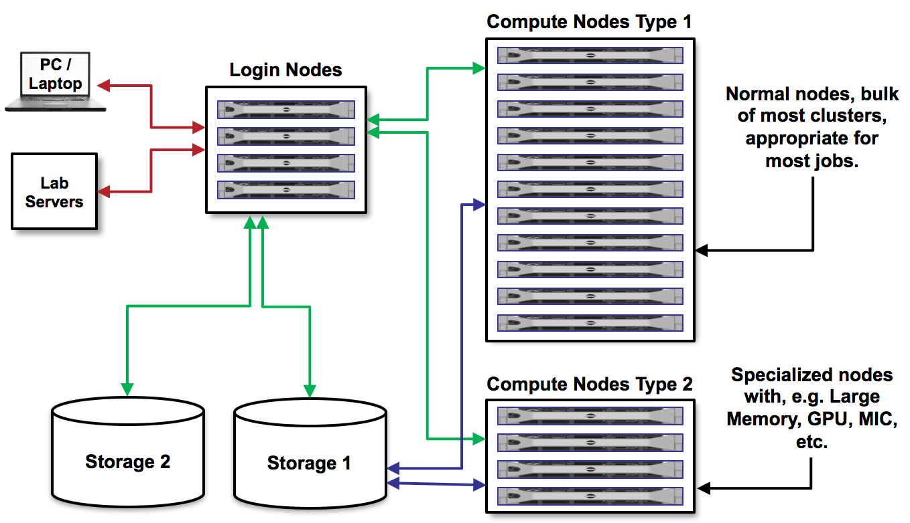

High Peformance Computing (HPC)
High Peformance Computing (HPC) refers to the aggregation of computing resources (i.e. supercomputers or clusters) to achieve performance far greater than a single workstation or server. By the end of this section, you should be able to:
Describe basic HPC architecture
Log in to a remote HPC system at TACC
Navigate the TACC file systems
Transfer files to and from TACC systems
Basic HPC System Architecture
As you prepare to use TACC systems for your research, it is important to understand the basic architecture. We can think of an HPC system as a very large and complicated laboratory instrument.


Users need to learn how to:
Interface with the cluster via command line
Load samples (transfer data)
Run experiments (submit batch jobs)
IMPORTANT: Login vs. Compute Nodes
An HPC system has login nodes and compute nodes. We cannot run applications on the login nodes because they require too many resources and will interrupt the work of others. Instead, we must submit a job to a queue to run on compute nodes.
Some Systems Available at TACC
Clusters
Lonestar6: Supporting Texas researchers in providing simulation, data analysis, visualization, and AI/machine learning.
Vista: Vista expands TACC’s capacity for AI and ensures that the broadscience, engineering, and education research communities have access to the most advanced computing and AI technologies.
Stampede3: The newest strategic resource advancing NSF’s supercomputing ecosystem for the nation’s open science community.
Storage Systems
Stockyard: Global file system, it is accessible from all of TACC’s systems. Capacity of 6,800 TB.
Corral: Storage and data management system designed to support large-scale collections and a collaborative research environment. Capacity of 40,000 TB.
Ranch: Long-term data archiving system, high capacity (1,000,000 TB).
File Systems
Every TACC user has access to three filesystems on each cluster.
The account-level environment variables $HOME, $WORK, and $SCRATCH store the paths to
directories that you own on each of these file systems.
File System |
Quota |
Key Features |
|---|---|---|
|
|
|
|
|
|
|
|
|
Files in $SCRATCH are subject to purge if access time is more than 10 days old.
Tips for Success
Read the documentation.
Learn node schematics, limitations, file systems, rules
Learn about the scheduler, queues, policies
Determine the right resource for the job